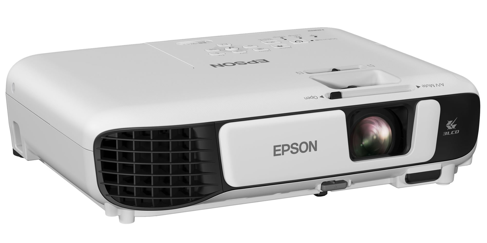

Для наших современных и продвинутых друзей мы стремимся сделать покупки в магазине еще более комфортными. Не так давно мы присоединились к одному из крупнейших в Беларуси гипермаркетов электроники и офисной техники "КораллМикро", который создан для удобной и эффективной работы с клиентами. Главный базовый принцип "КораллМикро.бай" – актуальный и широкий ассортимент, отличные цены, качественный сервис. В нашем интернет-магазине среди 15000 наименований товаров вы сможете подобрать для себя именно тот, который нужен вам! И по самой минимальной цене – актуально? Разумеется – теперь вы сможете покупать по выгодным ценам все, что Вам нужно у нас, не растрачивая впустую драгоценное время!
Имя модели: Epson EB-X41 (V11H843040)
Рейтинг: ****
Фото товара:

Масса и габариты: 2.5 кг / 237 х 302 х 82 мм
Описание:
Физическое разрешение: 1024x768
Цветовая яркость: 3600 Лм
Уровень контраста: 15000:1
Соотношение сторон изображения: 3:4
Категория: Для школ и ВУЗов
Диагональ экрана: 0.76 - 7.62 м (мин - макс)
Уровень шума: 28 дБ
Цена: 785 руб.